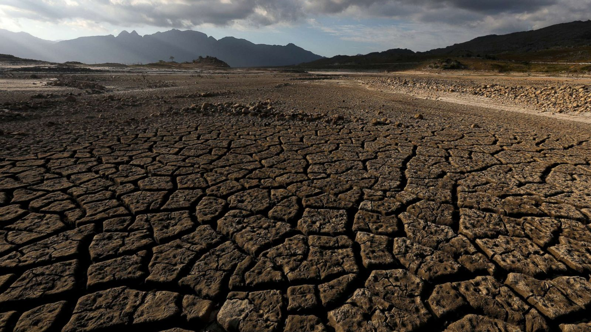
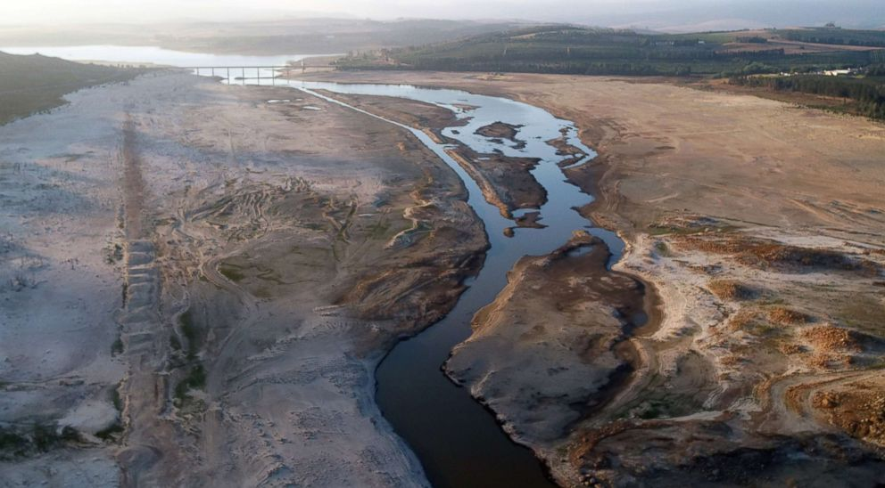
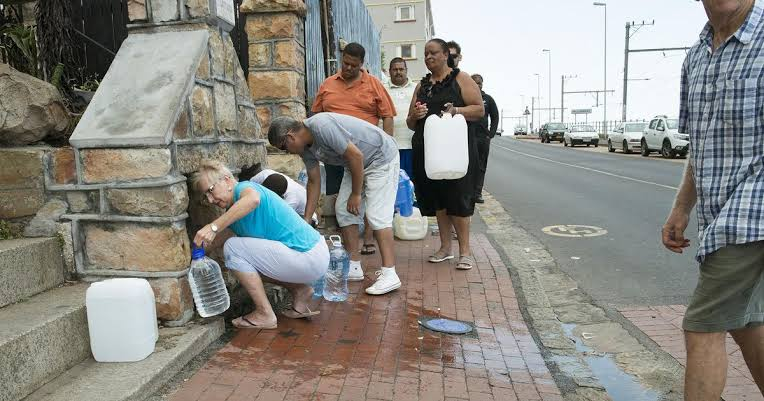

Problema del agua
En Sudafrica
- 1 En Sudáfrica el agua es muy escasa porque llueve muy poco.
- 2 En Ciudad del Cabo casi se quedan sin agua en el año 2018.
- 3 A eso le llamaron el "Día Cero", el día que se acabaría el agua.
- 4 La gente solo podía usar muy poquita agua al día.
- 5 Tenían que hacer filas para llenar garrafones en lugares públicos.
- 6 Las presas se estaban secando por la sequía tan fuerte.
- 7 La agricultura también gasta mucha agua y eso afecta más.
- 8 En los barrios pobres el agua llega menos y a veces está sucia.
- 9 El gobierno tuvo que poner reglas para no desperdiciar agua.
- 10 Sudáfrica nos enseña que si no cuidamos el agua, se puede acabar.
Imagenes y Videos Demostrativos:




Anterior